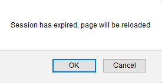

This property allows specifying if the user has to receive an alert when an action that is solved using AJAX is triggered, and the web session has expired. On the other hand, he will not be aware of the fact that the web session has expired and the session will renew automatically. Values
Description
This helps to alert the user that a redirect will be done so he can avoid losing the changes he has done on the page (by pressing the cancel button).  The security level of both values is the same. Notes:1. In a load-balancing environment, it's necessary to have Server Affinity or have any way to persist the web session among the servers, otherwise, the results will be unpredictable. 2. When GAM is activated in the KB, if "On session timeout" property is set to WARN value and GAM session timeout expires, the warning message of session expiration will also be displayed, despite that session timeout does not expire on server. This helps to alert the user that a redirect will be done (to the GAM login object), so he will lose his work unless he cancels in the session timeout alert box and saves the work before the redirect takes place. AvailabilityThe behavior described in this document is valid for Web User Experience property = Smooth, as since GeneXus X Evolution 3 upgrade 9. For Web User Experience property = Previous versions compatible or GeneXus X Evolution 3 upgrade 8 or previous, the behavior is as described in On Session Timeout property (X Evolution 3). CompatibilityFor Smooth models (as since GeneXus X Evolution 3 upgrade 9), the On Session Timeout property is independent of the parameters encryption mechanism of the Ajax calls. Scope Objects: Transaction, Web Panel |